DataFrames Visualization#
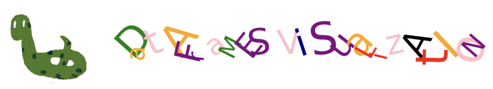
There are numerous DataFrame plotting methods available. Throughout this section, we’ll use the following dataframes.
import pandas as pd
df_grades = pd.read_csv('https://raw.githubusercontent.com/datasmp/datasets/main/grades.csv')
df_grades.head()
| Name | ID | Grade | Gender | HW | Test-1 | Test-2 | Test-3 | Test-4 | Final | |
|---|---|---|---|---|---|---|---|---|---|---|
| 0 | mqtvy | 37047871 | 10 | M | 30 | 91 | 69 | 93 | 17 | 50 |
| 1 | jbbsx | 35439616 | 11 | F | 6 | 18 | 93 | 9 | 98 | 91 |
| 2 | mrvab | 35543247 | 11 | M | 78 | 92 | 60 | 43 | 34 | 26 |
| 3 | bjyve | 61282135 | 9 | M | 60 | 8 | 10 | 99 | 80 | 87 |
| 4 | rlpsr | 53448034 | 10 | M | 3 | 38 | 45 | 43 | 79 | 69 |
df_stock = pd.read_excel('https://raw.githubusercontent.com/datasmp/datasets/main/stock.xlsx')
df_stock.head()
| Date | APPLE | TESLA | AMAZON | VISA | SP500 | |
|---|---|---|---|---|---|---|
| 0 | 2020-01-02 | 74.33 | 86.05 | 1898.01 | 189.66 | 3257.85 |
| 1 | 2020-01-03 | 73.61 | 88.60 | 1874.97 | 188.15 | 3234.85 |
| 2 | 2020-01-06 | 74.20 | 90.31 | 1902.88 | 187.74 | 3246.28 |
| 3 | 2020-01-07 | 73.85 | 93.81 | 1906.86 | 187.24 | 3237.18 |
| 4 | 2020-01-08 | 75.04 | 98.43 | 1891.97 | 190.45 | 3253.05 |
Plot Types#
Line Plot#
The default value of the kind parameter is ‘line’.
# all columns
df_stock.plot(); # kind = 'line'
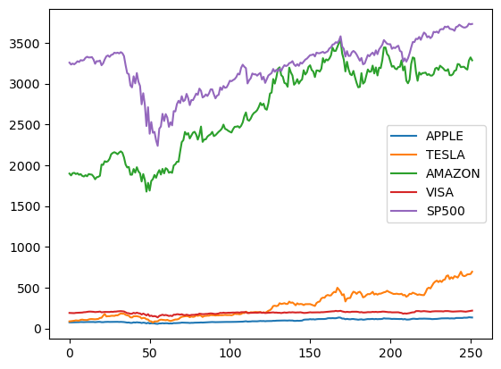
df_stock.plot( y='AMAZON');

df_stock.plot( y=['TESLA','APPLE']); # two columns
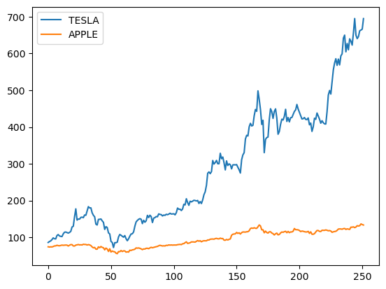
Scatter Plot#
x-coordinates should be provided.
df_stock.plot(x='APPLE', y='AMAZON', kind='scatter');

Histogram#
df_stock.plot(y='AMAZON', kind='hist');
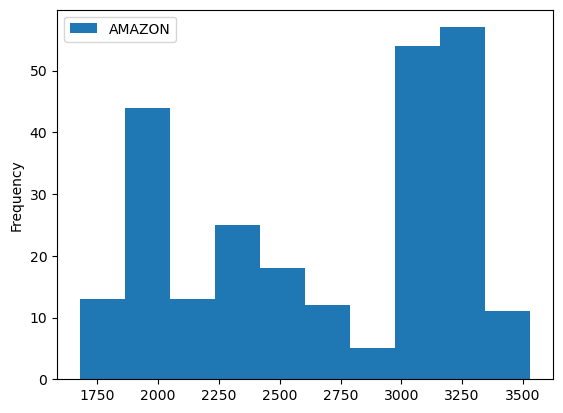
# horizontal
df_stock.plot(y='AMAZON', kind='hist', orientation='horizontal');
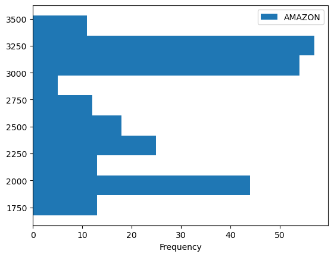
df_stock.hist(layout=(1,5), figsize=(10,4));
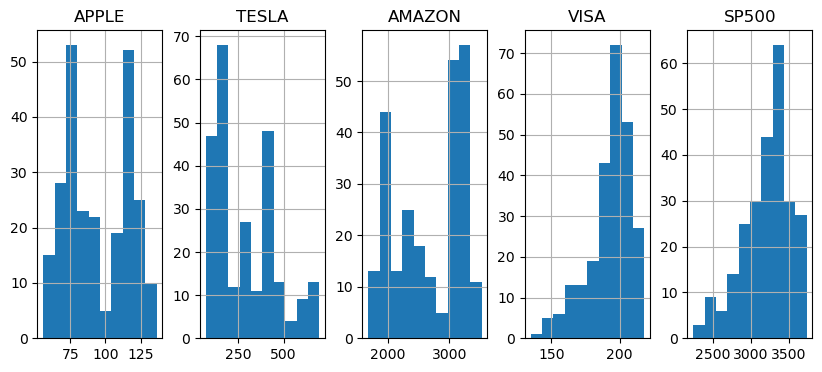
Bar Plot#
df_stock.head().plot(kind='bar');
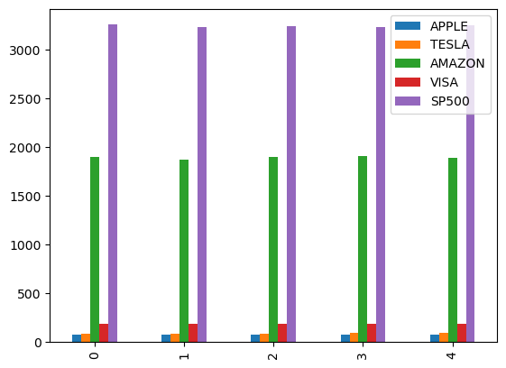
df_stock.head().plot(kind='barh');
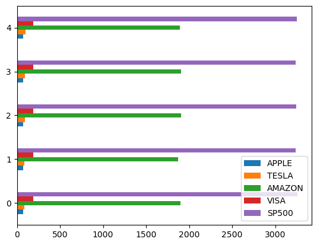
Stacked Bar#
df_stock.head().plot(kind='bar', stacked=True);
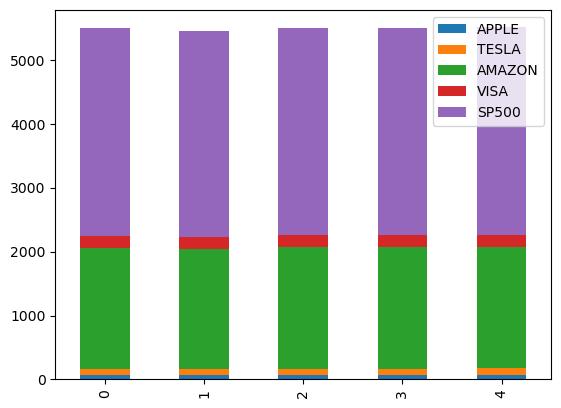
df_stock.head().plot(kind='barh', stacked=True);
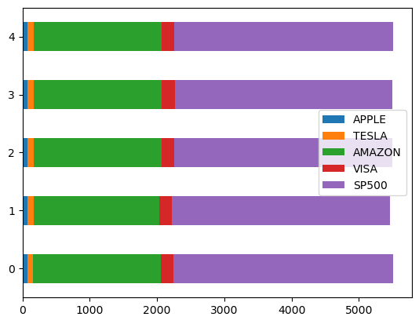
Pie Chart#
df_grades.Gender.value_counts()
Gender
M 54
F 46
Name: count, dtype: int64
df_grades.Gender.value_counts().plot(kind='pie', autopct='%.0f%%' );
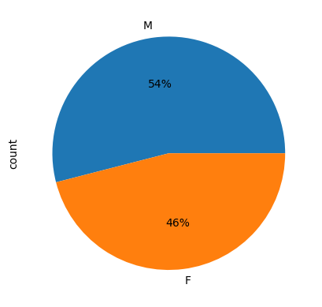
kde#
df_stock.plot(kind='kde');
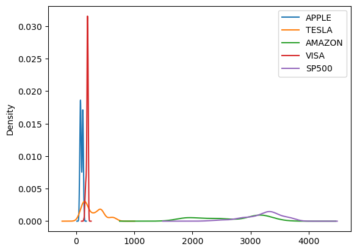
df_stock.plot(y='VISA', kind='kde');
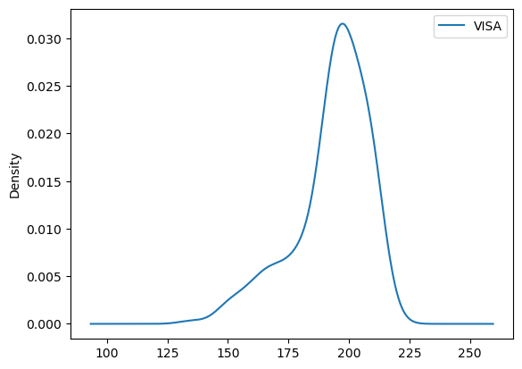
Box Plot#
df_stock.plot(kind='box');
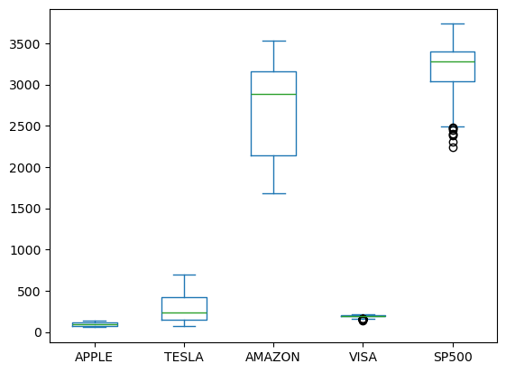
df_stock.plot(y='VISA', kind='box');
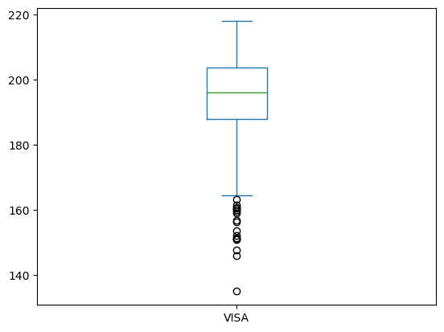
# horizontal
df_stock.plot(y='VISA', kind='box', vert=False);
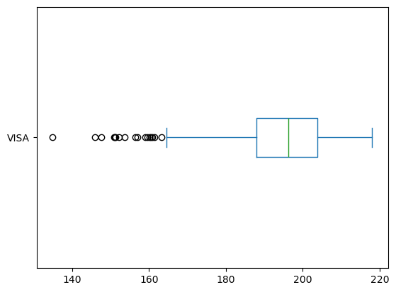
df_stock.boxplot();
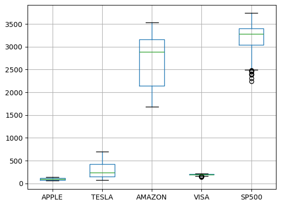
Area#
df_stock.plot(kind='area');
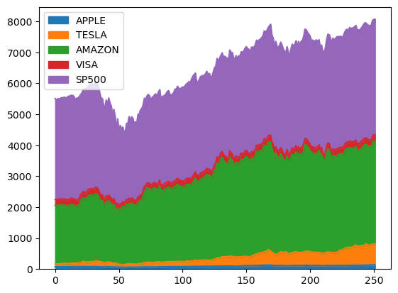
Plotting Parameters#
Color#
df_stock.plot( y='AMAZON', c='red');
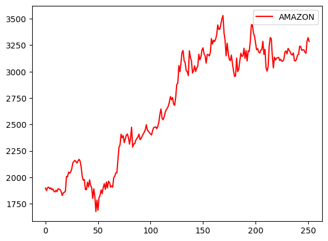
Figsize#
df_stock.plot( y='AMAZON', figsize=(20,4));
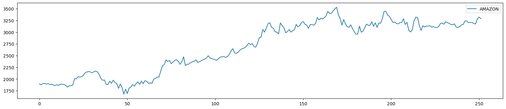
Title#
df_stock.plot( y='AMAZON', title='Stock Prices');
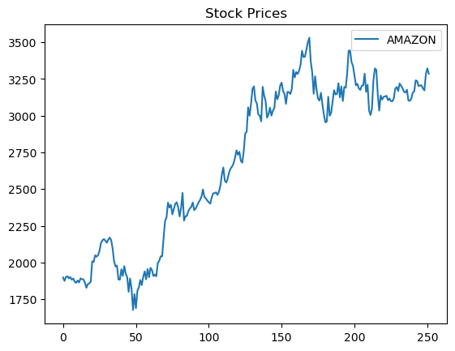
Axis Labels#
df_stock.plot( y='AMAZON', xlabel='Day', ylabel='Stock Values');
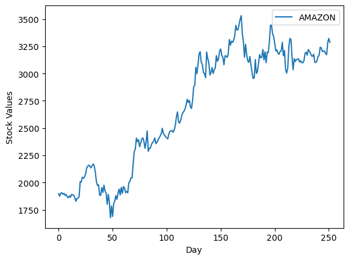
Linewidth#
df_stock.plot( y='AMAZON', linewidth=5);

Linestyle#
df_stock.plot( y='AMAZON', linestyle='dashed');
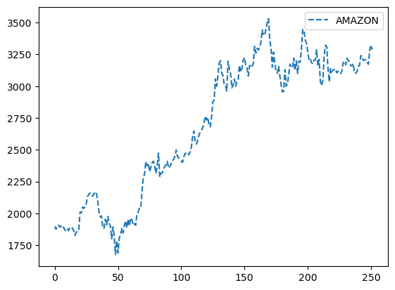
df_stock.plot( y='AMAZON', linestyle='dotted');
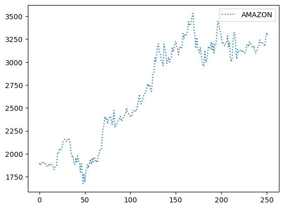
Size#
df_stock.plot(x='APPLE', y='AMAZON', kind='scatter', s=20);
Matplotlib and Dataframes#
import matplotlib.pyplot as plt
In the following code:
the index_col parameter sets the first column as the index of the DataFrame.
The parse_dates parameter converts string index values into Timestamps so they are considered as dates.
df_stock = pd.read_excel('https://raw.githubusercontent.com/datasmp/datasets/main/stock.xlsx', index_col=0, parse_dates=True)
df_stock.head()
| APPLE | TESLA | AMAZON | VISA | SP500 | |
|---|---|---|---|---|---|
| Date | |||||
| 2020-01-02 | 74.33 | 86.05 | 1898.01 | 189.66 | 3257.85 |
| 2020-01-03 | 73.61 | 88.60 | 1874.97 | 188.15 | 3234.85 |
| 2020-01-06 | 74.20 | 90.31 | 1902.88 | 187.74 | 3246.28 |
| 2020-01-07 | 73.85 | 93.81 | 1906.86 | 187.24 | 3237.18 |
| 2020-01-08 | 75.04 | 98.43 | 1891.97 | 190.45 | 3253.05 |
Scatter Plot#
x-coordinates should be provided.
plt.figure(figsize=(20,4))
plt.scatter(df_stock.index, df_stock['APPLE'], c='r');
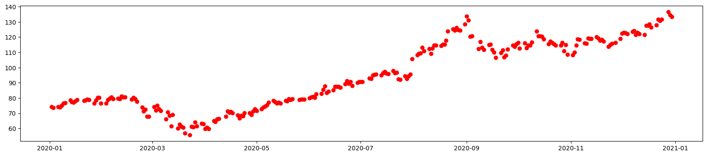
plt.figure(figsize=(10,4))
plt.scatter(df_stock['VISA'], df_stock['APPLE'], c='navy', marker='*');
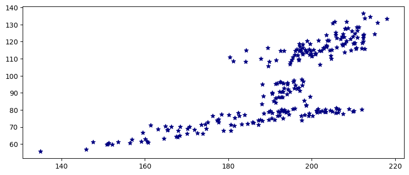
Line Plot#
The default x values are the indexes of the DataFrame.
plt.figure(figsize=(20,4))
plt.plot(df_stock['APPLE'], c='r');
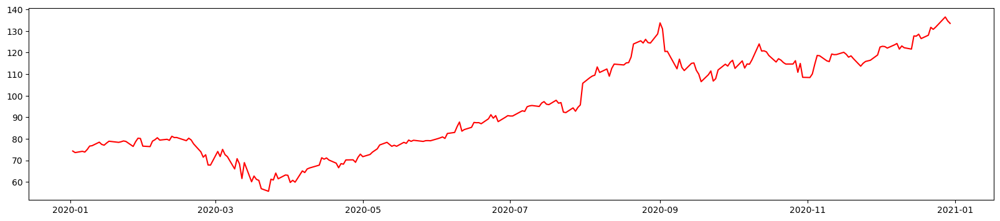
plt.figure(figsize=(20,4))
plt.plot(df_stock['VISA'], c='g', label='VISA')
plt.plot(df_stock['APPLE'], c='r', label='APPLE', linestyle='dotted')
plt.legend();
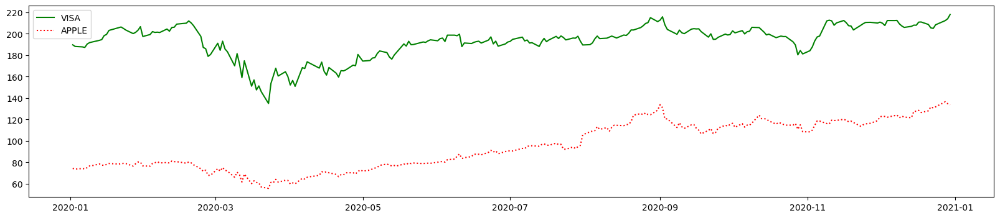
plt.figure(figsize=(20,5))
plt.axes().set_facecolor('black');
plt.plot(df_stock['VISA'], color='orange')
plt.grid(visible=False);
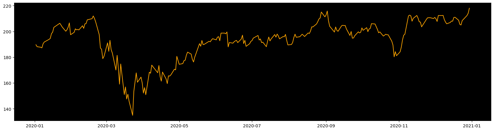
Histogram#
plt.hist(df_stock['APPLE']);
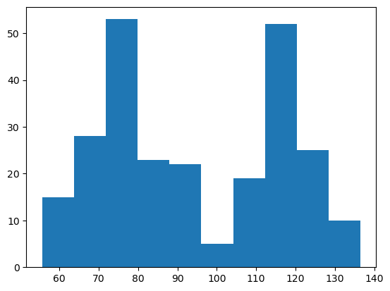